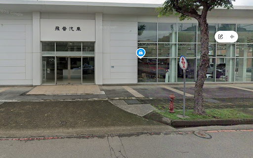
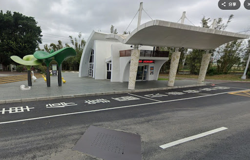

日期：（待填） | 目標抵達： 台中林酒店（約 12:15 順利抵達）
🗺️ 開啟 Google Maps 全程導航路線| Stop | Time | Location | Landmark | Riders | Notes |
|---|---|---|---|---|---|
| 第一站 | 09:30 集合 09:45 發車 |
桃園市蘆竹區文中路一段128號 | 飛普汽車 (Jaguar & Land Rover) | 7 人 | 請於人行道等候，切勿站在車道 |
| Stop 2 | 10:05 | 國道1號 中壢服務區 | 統聯客運休息站 | 9 人 | 15分鐘休息/上洗手間 |
| 終點 | ~12:15 | 台中市西屯區朝富路99號 | 台中林酒店大門口 | - | 預計中午抵達 |
集合時間： 09:30 集合，09:45 發車
地址： 桃園市蘆竹區文中路一段128號
乘員數： 7 人
等候點： 展示中心門口人行道
現場參考照片：

預計時間： 約 10:05（停留 15 分鐘）
地點： 國道 1 號中壢服務區
乘員數： 9 人
等候點： 服務區內統聯客運休息站
現場參考照片：
